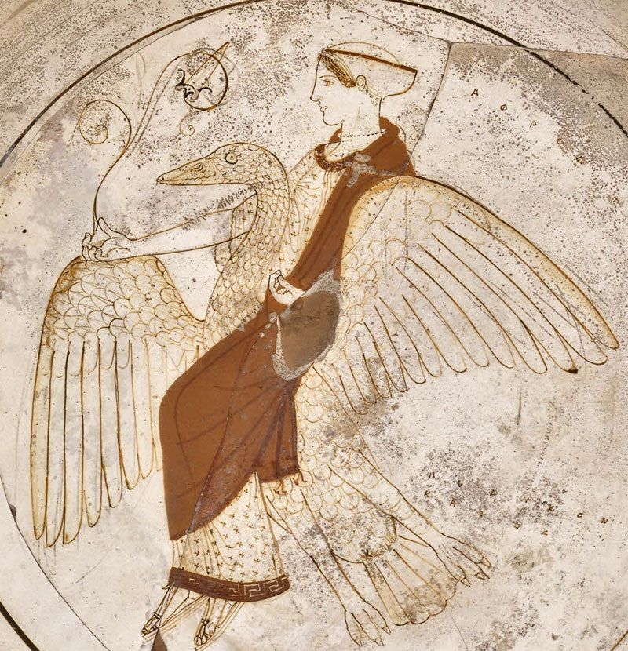

AFRODITE
Cílice¹ de Afrodite montando um ganso
Figura ateniense cerca do século 5 AEC

Afrodite era a olimpiana deusa do amor, beleza, prazer e procriação.
Ela era retratada como uma linda mulher geralmente acompanhada pelo deus alado Eros. Seus simbolos incluem Pombo, Maçãs, Conchas e Espelhos.
Em esculturas classicas e afescos ela era geralmente retratada nua.
Os Mitos de Afrodite incluem:
- Seu nascimento da espuma do mar.
- Seus casos com o deus Ares.
- Seu amor por Adonis, um jovem tragicamente morto por um javali,
- Seu amor por Ankhises um principe pasteador.
- O julgamento de Paris, no qual a deusa ganhou a maça de ouro e em retorno prometeu a Paris a mão de Helena.
- Na guerra de tróia ela apoiou seus favoritos; Paris e Aeneas.
- Sua ajuda na corrida de Hippomenes pela mão de Atalanta, no qual ela lhe deu maças douradas para distrair Atalanta.
- A Morte de Hippolytos causada pela deusa após ele desprezar sua cultuação.
- A estatua de Pygmalion que foi trazida a vida para ser esposa dele.
- A perseguição de Psyche, a amada de seu filho Eros.
Você pode achar estes e outros mitos completos sobre a deusa Aqui
Você pode achar a família da deusa Aqui